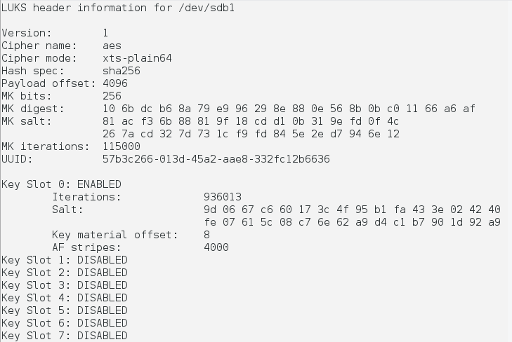

cryptsetup Ile Harici Disk Sifreleme
Linux e kullandığının harici harddiskini şifrelemek için cryptsetup yazılımını kullanabilirsiniz. Aşağıda cryptsetup kullanımını annlattım. Sifrelerinizi kaybederseniz dosyalarınaza bir daha ulaşamazsınız. Bunu dikkate almanızı öneririm
A) Disk bölümleri oluşturuyoruz.
a- Şifrelemek istediğimiz diskin adını öğrenelim.
sudo fdisk -lb- cfdisk ile diskmizi bölümlüyoruz.
x= Diskimizin harfi
y= Diskimizin bölüm numarası
1 tane linux ext4
1 tane ntfs olmak üzere iki bölüm oluşturuyoruz.
sudo cfdisk /dev/sdx
B) Dosya sistemlerini hazırlıyoruz.
*) Ntfs Bölümü :
mkfs aracı ile ntfs okrak seçtiğimiz bölümü biçimlendiriyoruz (Boşluğa yazacağı için diskinizin boyutuna göre uzun olacaktır. Benim 400G alanı biçimlendirmem 4 saat sürdü
sudo mkfs.ntfs /dev/sdxy
Bölümü kontrol etmek için /opt üzerine mount ediyoruz
sudo mount /dev/sdxy /opt
cat aracı kullanarak bölümü var olup olmadığını kontrol ediyoruz
cat /etc/mtab
Kontrolumuz olumlu sonuç aldığımız takdirde, bölümü ayırırıyoruz.
sudo umount /opt*) LUKS Bölümü ve Şifreleme :
cryptsetup programını yüklüyoruz.
sudo apt-get install cryptsetup UBUNTU/DEBİAN sudo dnf install cryptsetup FEDORA/RETHAT
Diski şifrelemek için;
NOT: bu bölümde bize şifremizi soracak dikkatlice şifrenizi yazın ve onaylayın . Burada yazdığınız şifre ana şifremiz olacaktır.
Onaylanamanızı isteyen soruyo büyük harflerler "YES" yazarsanız onaylamış olursunuz.
sudo cryptsetup -y -v luskFormat /dev/sdxy
Dosya sistemizi ext4 yapıyoruz.
mkfs.ext4 /dev/sdxy
Diskimizin özelliklerine ve şifre statülerine bakmak için aşağıdaki komutu giriyoruz
sudo cryptsetup luksDump /dev/sdxy
Resimdeki gibi bir çıktı almanız gerekiyor.
Bu çıktıta gördüğümüz üzere 7 adet kapalı şifre slotumuz var istersek bunlara farklı şifreler atayabilir ve silebiliriz.
Şifre Ekleme;
Burada ilk belirtğimiz şifredeki gibi iki kere şifre girmemiz gerekiyor
sudo cryptsetup luksAddKey /dev/sdxy
Şifre Silme;
Sileceğimiz şifreyi giriyoruz.
sudo cryptsetup luksRemoveKey /dev/sdxy
Bölüme isim verme; bölümü ekinleştirmek için /dev/mapper altına isim belirtmeliyiz. Burada belirteceğiniz isim bu bölüm için yüm kullanacağını işlemlerde gereklidir
sudo cryptsetup luksOpen /dev/sdxy bolum_ismi
İsmi kontrol etmek için ;
ls /dev/mapper
ls -all /dev/mapper/bolum_ismi
Bölümüzün statusunu kontrol etmek için ;
sudo cryptsetup -v status bolum_ismiBölümüzü bağlamak için ;
sudo mount /dev/mapper/bolum_ismi /mnt
Bölümüzü ayırmak için ;
sudo umount /mntBölümüzü kapatmak için ;
sudo cryptsetup luksClose bolum ismi